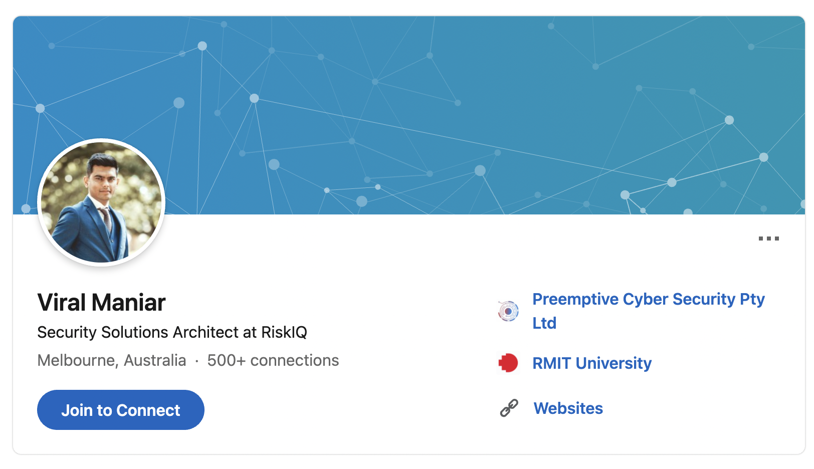

1.Please tell us about your IT work. What exactly do you do?
The IT professional works in Cybersecurity as a Security architect and helps customer’s gain visibility of attack surfaces and exposures to threats on the internet. Based on the current risk profile, it is a Security architects’ job to reduce the attack level by taking down phishing domains, fake social media impersonations, physical threat to office locations and looking for various threats by threat hunting. Most important part is writing detailed technical reports and presenting them to executive members so that they can make decisions about their risk appetite and how their exposure looks like on cyber security.
2.Please tell us about the industry you work in.
Cyber Security is a very niche area especially in Oceania, there are very few people in the space. It is one of the most difficult industries to get into however there are many collaboration projects between universities, governments, and the private sector. There are multiple initiatives being taken by the government in this space where critical infrastructure of the nation is protected from the nations state target. There is an open culture of cybersecurity in Australia with research being shared through various mediums such as conferences, capture the flag events and free workshops organized by private organizations. Overall, the best industry to be in looking at current market scenarios.
3.What other kinds of work do you have to do?
The job is very dynamic in nature, one needs to update themselves every few weeks, keeping up with changing market scenarios by knowing new technologies, vulnerabilities and new malware targeting organizations.
Need to have soft skills to communicate effectively with executive members as they don’t understand technical jargon. Important to have both business and technical knowledge.
Managing a team of software developers, by letting them know various bugs and misconfigurations in the platform. Doing regular follow ups to make sure the bugs are getting fixed for the benefit of the customer when it comes to utilization.
Communicating with the data science team to increase confidence in the platform and its data to make sure there are no false positive or data integrity issues.
4.Who are all the different people you interact with in your work? Please tell us about them.
- Software developers and data science teams
- CEO, CTO, junior analyst – interacting with a wide variety of skill levels.
- Internal technical director: Guide the team and bring in more business and making sure customers are getting all the attention with platform issues.
- External Analysts – Make sure the business is as usual and there is enough confidence in the technology the organization is using by doing the technical work and reporting to chief information security officer.
5.What about your interactions with clients or investors?
Need to talk to clients and identify the needs and analyse whether the platform is going to solve their problem i.e., is it the right fit. Other interactions include training clients so that they can utilize the platform in the way they want and help to perform integrations with other software. Organising regular cadence calls so that they can discuss issues about the platform and explain new features in the next sprint cycle.>
The IT industry is large, varied and changes over time. It is also easy to get a misleading impression of what is typically involved on a day-to-day basis from a job advertisement or a position description. In order to help you understand this, the best way seems to be to hear from some IT professionals about their daily work.
We have interviewed: Viral Maniar
LinkedIn page (opens in another tab)

Viral works for RiskIQ in cybersecurity
6.What aspects of your work do you spend most time on? Please tell us about these.
Writing reports is the most time consuming as it is the most important aspects for which customers are paying money for. Making sure the report is technically sound, has no errors, and written in a way so that higher management can understand the issues.
Making sure that customers are utilizing platforms and data in a way that helps them to uplift their security posture.
7.Which aspects of your work do you find most challenging?
Keeping up with the latest cyber security threats and learning new things. Constantly keeping an eye on various threat actor groups who are doing malicious activities on the internet. If you don’t enjoy constant learning then you’ll soon be outdated and lose value in the market. Since there is constant learning it is difficult to maintain and a work life balance as you are always on your toes. Need to help clients anytime as evil doesn’t sleep.
8.Finally, can you share an example of the work you do that best captures the essence of the IT industry?
There was an instance where an organization was constantly targeted by a threat actor from china. After following the group for a long time and collecting evidence of their digital footprint a case was developed and reported to various computer emergency response teams, local government agencies and international agencies that keep an eye out for malicious activity. The group was eventually caught and had to destroy the infrastructure and stop their illegal activities on the internet.